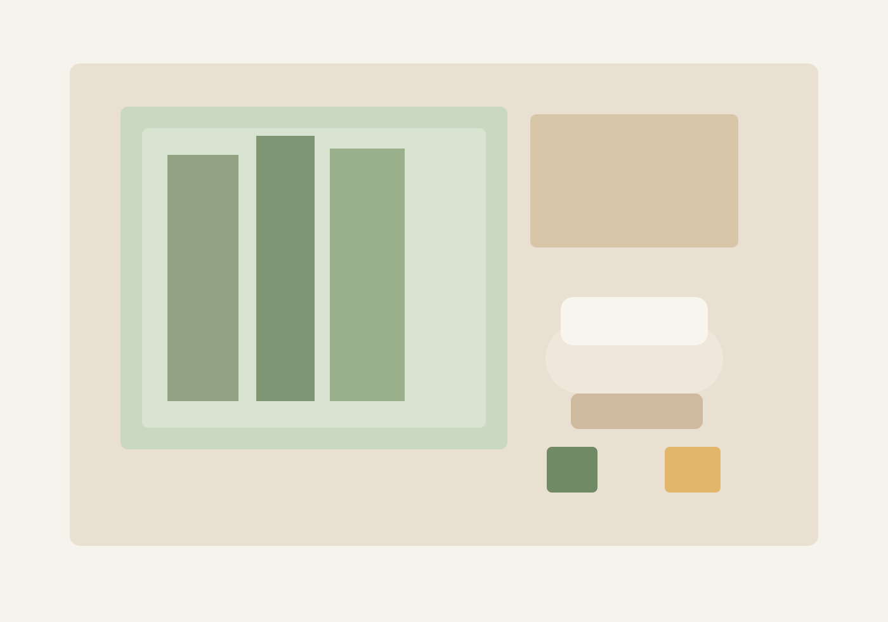
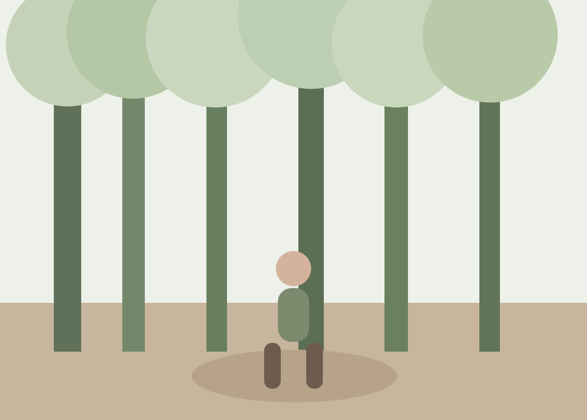
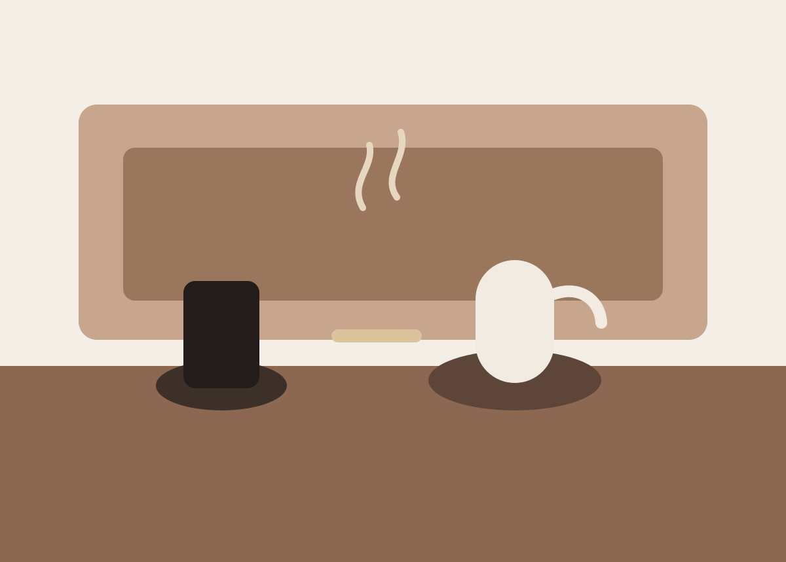

Half Day
深呼吸リセット
120分
首肩まわりの緊張をほどき、温浴と呼吸誘導で頭の疲れを静かに鎮める半日プラン。 短い滞在でも休息の質を変えたい方へ。
- カウンセリング 15分
- ハーブ温浴 30分
- オイルトリートメント 60分
- 季節のお茶と余韻時間 15分
Philosophy
蒼杜は、疲れを「消す」のではなく、こわばった時間の流れをゆるめていく場所です。 光の入り方、温度、香り、手技の強さまでを穏やかに設計し、ゲストごとの呼吸の速さに合わせて体験を組み立てます。
到着後は短いカウンセリングから始まり、その日の巡りや睡眠状態、緊張の出やすい部位を確認。 過度な刺激を避けながら、深く休める感覚を少しずつ身体に思い出してもらいます。
Programs
Half Day
120分
首肩まわりの緊張をほどき、温浴と呼吸誘導で頭の疲れを静かに鎮める半日プラン。 短い滞在でも休息の質を変えたい方へ。
Signature
5時間
温浴、ボディ、呼吸ワーク、軽い食養生を組み合わせた当館の基準プログラム。 眠りの浅さや気持ちの切り替えにくさを感じる時期におすすめです。
Overnight
1泊2日
客室での休息と夕朝のケアを通じて、生活の速度をいったん緩める滞在型プラン。 自分の感覚を丁寧に取り戻したい方に向いています。

Environment
施術室はすべて半個室設計。視線を遮りながら閉塞感をつくらず、外の木立と光の移ろいを感じられるよう整えています。
柚子、黒文字、蓬など、香りの立ち方が穏やかな植物原料を中心に使用。 強い刺激を避け、滞在後まで余韻が続く調香に仕上げています。
体質やその日の状態を見ながら圧の深さを調整し、無理のない流れでケアします。 初めての方にも、施術内容を都度お伝えしながら進行します。


Benefits
強い刺激を避けた手技と温浴で、夜に向けて身体の緊張がほどけやすい状態を目指します。
情報から距離を置く導線と静かな接客で、気持ちの切り替えに必要な余白を確保します。
香り、温度、触感を通じて、忙しさで鈍りがちな身体感覚をやさしく呼び戻します。
事前案内、当日のカウンセリング、終了後の過ごし方までを丁寧にご説明します。
Guest Voice
到着した時は頭の中で仕事のことを考えていましたが、温浴の後には呼吸が明らかに深くなりました。 「休んでよい」と自然に思えたのは久しぶりでした。
強すぎない施術で安心感があり、終わった後に身体が軽いというより、内側が静まる感覚が残りました。 次は季節を変えて訪れたいです。
初めてのウェルネス施設でしたが、説明が丁寧で気負わず過ごせました。 施術後のお茶の時間まで含めて、全体がひとつの体験として整っていたのが印象的でした。
Reservation
ご予約前にご不安がある場合は、体調や目的に合わせた過ごし方をご案内します。 まずはご希望日時とご滞在イメージをお聞かせください。